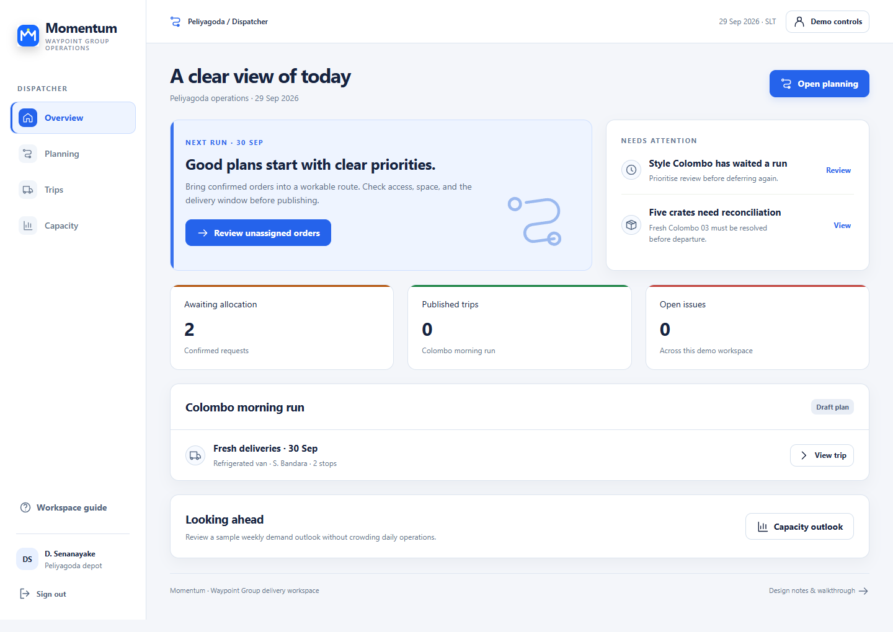
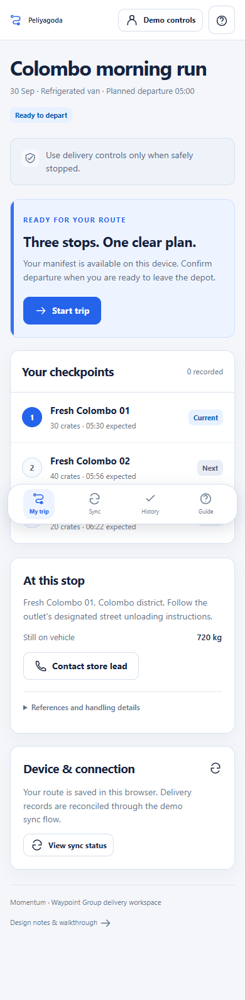

Open the prototype
Prototype previewsDesktop clarity. Phone-sized focus.

View the driver phone layout

Replace uncertainty at the handoff.
The key problem is not a lack of dashboards. It is that each role works from a different version of the delivery story. A dispatcher allocates a load, a loader discovers a shortage, a driver records an offline handover, and a store waits without knowing which information is final.
The design makes each commitment explicit: request received, plan published, load verified, delivery recorded, record synced, receipt confirmed. The main screen answers three questions: what is happening, what needs my attention, and what can I do next?
Core tradeoff
Prioritise a reliable, explainable handoff over maximum information density. Reference identifiers, evidence, and calculations are still available, but expand on demand. A stop list carries the route story instead of an unsupported geographic map. A published plan is locked in this prototype to prevent stale loading instructions; future versioned replanning would require an explicit re-acknowledgement flow.
02 · Four grounded personasThe same system, different working conditions.
DispatcherD. Senanayake
Context: Large desktop, stable depot connection.
Goal: Allocate scarce capacity, honour constraints, explain deferrals, and see field issues.
Risk: Repeatedly skipped outlets and incompatible allocations.
Response: Queue beside selected trip, independent capacity bars, explicit checks, service-history warning.
Warehouse loaderR. Fernando
Context: Shared tablet or terminal at the loading dock.
Goal: Load in the right sequence and report missing or damaged goods before release.
Risk: Confusing loaded quantity with verified quantity or using an outdated plan.
Response: Large count controls, reverse loading sequence, stable published manifest, blocked handoff until checks pass.
DriverS. Bandara
Context: Personal phone, interrupted coverage, use while safely stopped.
Goal: Know the next checkpoint, capture a handover, and continue without losing offline work.
Risk: A false synced message, duplicate records, or an inaccessible evidence action.
Response: Current stop first, floating bottom navigation, local drafts, explicit sync and retry states.
Store managerK. Mendis
Context: Outlet counter on desktop or phone.
Goal: Submit a request, arrange receiving staff, understand deferrals, and confirm actual quantities.
Risk: Mistaking a request for a scheduled delivery or a driver signature for final receipt.
Response: Clear arrival estimate, request journey, revised dates, actual-received check and evidence on demand.
03 · Connected flowsOne record moves through the team.
Store request → Dispatcher allocation and publication → Loader verification → Driver handover and sync → Store receipt
Store
Sign in → My orders → Create request → Received confirmation → Planned arrival → Delivery evidence → Confirm receipt or report discrepancy.
Dispatcher
Overview → Planning queue → Assign or defer with reason → Validate constraints → Publish → Trip checkpoints → Review and resolve issues.
Loader
Published manifest → Reverse-order checklist → Count → Report shortage if needed → Replenish → Verify → Confirm handoff.
Driver
Ready manifest → Start trip → Mark arrival → Record quantity and evidence → Save online or locally → Reconnect and retry → Next stop → Depot return.
Admin extension
People → Add or edit → Validate username → Save → Deactivate or delete after confirmation. Directory records are read-only.
04 · Screen-by-screen rationaleEvery screen earns its place.
Sign in
Choose one of four operational roles with a simple username and password. Demo account shortcuts remove onboarding friction for a judge without pretending to be secure authentication. The admin account is an optional extension.
Store: My orders
Show the next relevant delivery and whether the store must act. Active, deferred, and completed filters separate work states. Human-readable cargo and dates lead each row; reference identifiers stay inside order details.
Store: Create order
Group the request into destination, schedule, and load. Weight and volume are separate user estimates rather than a universal crate conversion. A concise review panel makes the commitment visible before submission.
Store: After cutoff
Preserve the request while clearly distinguishing original and revised dates. Require acknowledgement of the next eligible run. The recovery changes one part of the familiar form, not the entire layout.
Store: Order detail and receipt
Use a five-checkpoint journey to explain where the order stands. Separate driver handover from the store’s quantity confirmation. Evidence and reference details expand only when verification is needed.
Store: My outlet
Provide one reliable place to see access, unloading conditions, and receiving hours. A correction request is reviewed by dispatch rather than silently changing a restriction after a route has been planned.
Dispatcher: Overview
Surface the next decision, the current trip, and a short attention list. Summary counts are calculated from the small fixture. Avoid a wall of metrics or a map that does not help the allocation decision.
Dispatcher: Planning
Keep unassigned demand beside a selected trip. Show weight and volume independently. Explain constraint failures before publication, and retain deferral reasons and previous service history. Validation is an explicit checkpoint.
Dispatcher: Trips and issues
Separate progress monitoring from planning. Order-level handover states and operational issues remain visible, with a recorded resolution note. This closes the feedback loop from loader and store.
Dispatcher: Trip details
Follow an ordered list of delivery checkpoints. Departure payload is labelled separately from a driver’s remaining cargo. Crew contact and references are secondary to the next operational handoff.
Dispatcher: Capacity outlook
Give future demand its own quiet space rather than cluttering today’s work. A small, explicitly illustrative weekly volume chart leads to a planning note. It does not promise a trained forecast or invent vehicle availability.
Loader: Loading workspace
Show reverse delivery loading order, large count controls, and explicit verification. Distinguish loaded from verified crates. A shortage blocks final handoff even when it has been reported, preventing an accidental release.
Loader: Resolved loading and history
Replenish missing crates and require a fresh verification before handoff. The confirmed manifest becomes read-only and appears in history, giving the driver a stable departure record.
Driver: My trip
Put the current stop and next action above secondary details. Starting, arriving, recording, and returning are separate checkpoints. The phone layout uses bottom navigation and large actions for use while safely stopped.
Driver: Record delivery
Sequence quantity, recipient, and evidence in a readable form. Support a partial or refused delivery with a reason. Signature and photo can be captured locally, with an explicit unavailable-evidence explanation when capture fails.
Driver: Device and sync
Make local save, pending sync, failure, and success visibly different. Preserve the same record through retry and do not claim store availability until it is synced. The driver can continue the route without losing the handover.
Driver: Delivery history
Provide a compact record of handovers and their receipt statuses without duplicating the active trip screen. References expand on demand for disputes or verification.
Admin: People
Provide minimal local create, read, update, deactivate, and delete controls for sample users. Prevent duplicate usernames and self-removal. This requested extension stays outside the main four-role workflow.
Admin: Operating directory
Inspect the supplied outlet and vehicle attributes without adding unsupported operational editing. This makes source constraints reviewable while protecting the integrity of the demo fixtures.
Workspace guide and demo controls
Explain the main interactions in a minute and allow deliberate checkpoint jumps for evaluation. Reset and scenario replacement require confirmation so a judge does not accidentally lose a walkthrough.
05 · Named degradation scenariosRecovery preserves the work.
Primary: connection lost at handover
A driver can lose coverage after a recipient signs. Losing this record would force another visit or create a dispute. The design stores quantities, signature, and photo together locally, identifies them as pending sync, and allows the route to continue. A failed attempt leaves the same record available for retry. Successful sync unlocks the store’s review but does not pretend that the store has already confirmed receipt.
Loading shortage before departure
Five missing crates prevent release even if the shortage has been reported. The loader can adjust the count after replenishment, but must verify it again. The dispatcher sees the issue. This demo intentionally chooses full replenishment rather than introducing a complex partial-dispatch approval workflow.
Order submitted after cutoff
The form retains entered data and the original date. A revised eligible date and explicit acceptance prevent a store from assuming next-day delivery. Submission still means received for planning, not a vehicle commitment.
Incompatible vehicle and capacity conflict
An ambient van, truck at a van-only outlet, or wrong-depot vehicle produces a readable validation failure. An order that exceeds available volume cannot be squeezed into the plan. Deferral requires a recorded reason, and previous deferral history is visible before deciding.
Smaller interaction safeguards
Duplicate sample submission is prevented. Empty searches have a recovery message. Unsaved form navigation prompts before discard. Account usernames are unique. A user cannot delete their own active admin session. Evidence can be declared unavailable with an explanation rather than silently fabricated.
06 · Visual and interaction systemColour communicates meaning.
Teal
Primary action, selection
Green
Verified, confirmed
Blue
In progress, information
Amber
Attention, pending action
Red
Blocked, failed
Every status includes a readable label. No coloured status dots. Neutral grey carries draft and scheduled states. Teal is the brand action colour, so green remains meaningful for completion.
Warm white surfaces, generous spacing, restrained shadows, and a modest green editorial illustration create character without competing with operational content. Panels use 18px corners, controls 10px, and a compact type hierarchy with local system fonts.
Progressive disclosure
People read store names, quantities, dates, and the next action first. Order IDs, vehicle identifiers, constraint calculations, activity history, and evidence expand when verification requires them. Actions are labelled rather than relying on ambiguous icons.
Mobile context
A floating bottom navigation replaces the sidebar below 800px. Desktop side panels stack into a natural reading order. Driver actions remain large and sequential. Reduced-motion preferences are honoured, and keyboard focus stays visible.
07 · Domain accuracy and assumptionsA consistent sample, not invented live data.
- Outlet and vehicle attributes come from the supplied reference CSVs. Friendly branch names are derived display labels, not actual addresses.
- Fresh stops use OUT001, OUT002, and OUT003. Their source windows are 05:00 to 07:30, 05:30 to 08:00, and 05:00 to 07:30. Planned arrivals are 05:30, 05:56, and 06:22, before opening at 8 AM.
- VEH035 is a refrigerated Peliyagoda van with capacity 1,040 kg and 7.0 m³. The fixture totals 720 kg and 5.6 m³.
- The route uses 12 km outbound, two 4 km inter-stop legs, and a 12 km return. Street-stop handling allowance is 16 minutes. Travel buffers and a 120 L remaining fuel balance are explicit demo assumptions.
- 29 Sep planning and 30 Sep delivery are separate snapshots. The order cutoff is 16:00. The late-order recovery uses 1 Oct as the next eligible run.
- The refrigerated vehicle can carry ambient goods. Ambient vehicles cannot carry chilled or frozen goods. No unsupported ban on mixed brands or arbitrary service perimeter is imposed.
- One fixed sample trip is used instead of a full optimiser. Availability and first-of-two daily trip checks are fixture assumptions, not an allocation engine.
- Signature/photo policy is a design choice for this prototype. Exceptions are captured rather than falsely marking absent evidence complete.
- The future capacity outlook is illustrative, not a Datathon prediction. Exact geography, live GPS, telemetry, and real contact numbers are intentionally omitted.
08 · Review and submissionWhat this package covers.
The booklet weights problem framing 25%, user context 20%, degradation 15%, domain accuracy 10%, scope and prioritisation 15%, and visual/interaction consistency 15%. The prototype and this guide address those areas together. A score cannot be guaranteed.
Three to five minute video outline
- 0:00 to 0:35: Explain fragmented handoffs and the four working contexts.
- 0:35 to 1:20: Show a request, constrained planning, and a clear deferral decision.
- 1:20 to 2:00: Show reverse loading order, shortage, replenishment, and blocked release.
- 2:00 to 3:00: Show the phone driver view, handover evidence, offline save, and retry.
- 3:00 to 3:40: Show store receipt and the resulting dispatcher issue.
- 3:40 to 4:20: Explain progressive disclosure, source-data assumptions, restraint, and AI assistance.
AI disclosure draft
AI assisted the interpretation of the supplied brief, generation of frontend source code, SVG assets, interface copy, interaction fixtures, and supporting documentation. Automated browser checks supported validation. The team must review the result, identify its own research and design contributions, and accurately describe any manual changes. Do not claim independent interviews, usability studies, or human-authored work that did not occur.
Still required from the team
- Add the team name and final ownership/contribution details.
- Review every sample assumption and test the prototype on your actual phone.
- Provide a shareable prototype link and an unlisted YouTube demo URL.
- Prepare the required single design file with distinct pages. Confirm the chosen HTML prototype packaging with organisers if necessary.
- Use TeamName_Designathon as the submission base filename. The source ZIP supplied here is not itself a claim of a complete competition hand-in.
Designathon deadline in the supplied booklet: 29 Sep 2026, 23:59 SLT.